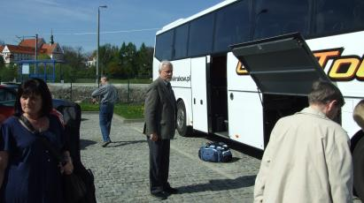
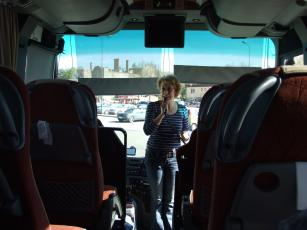
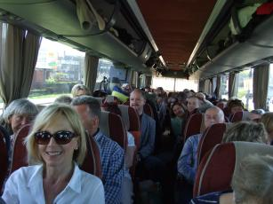
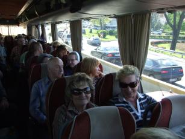

A tymczasem w Cameracie...
.
2012-04-27
Piękna pogoda. Zbieramy się o 15.30 na parkingu, gdzie już stoi autokar, którym ruszamy w trasę. Jeszcze zapakować walizki, stroje i wsiadamy.
Na początek kilka zdań od pani dyrygent i w drogę.

Miny mamy zadowolone. Wszyscy cieszą się z wyjazdu i są go bardzo ciekawi a jednocześnie gdzieś tam w głębi nas czai się trema, ale nic to jedziemy.
 
Pierwszy nocleg jeszcze w Polsce koło Wyszkowa. Chwila błądzenia wokół drogi „S” i jesteśmy. Zakwaterowanie i spanko.

© Stowarzyszenie Muzyczne Chór Camerata Wieliczka